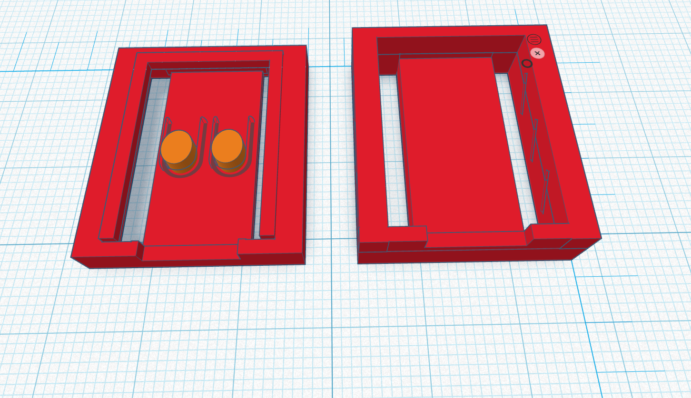

Prototype 2

Key Features
Prototype 2 improved the first design by making the case more suitable for classroom use. The focus was on securing the 3D prints together and protecting the pin area while keeping the USB port and board features accessible.
- Improved protection around the pin area
- Better USB access opening
- Ventilation slots to help with cooling
- Stronger shape with improved edges
- More Secure and Reliable in use
Changes Made from Prototype 1
- Added stronger side protection because the first version did not protect the connection points well enough.
- Improved the openings so the USB cable and pins could still be accessed.
- Added ventilation because the board may warm up during use.
- Improved the overall layout so it looked cleaner and was easier to use.
Advantages
- Better protection than Prototype 1
- Still allows access to important parts of the board
- More suitable for repeated student use
- More professional and organised design
- Increased the thickness for better durability
Remaining Problems
- Buttons should be adjusted for easier use
- The case still needs final testing for fit and comfort.
- Sharp edges or rough print areas may need sanding or rounding.
- The final design may need minor changes after teacher or peer feedback.
Planned Improvements for Final Version
The final design will refine the print, make the case easier to handle, improve the finish, and confirm that all access points work correctly.